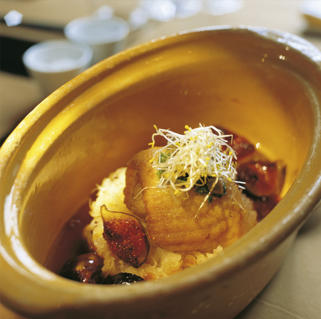
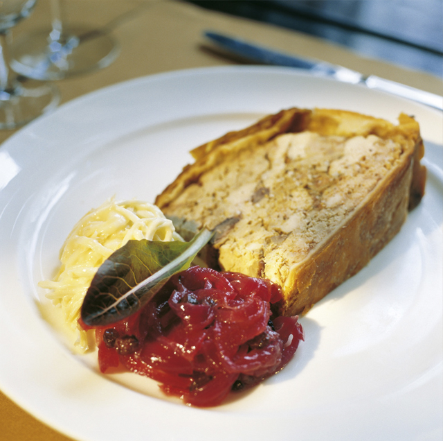

Those who on occasion enjoy dining in Strasbourg will be reacquainted with an old friend. Antoine Westerman’s Buerehiesel was the only three-star restaurant in this Alsatian metropolis on the Rhine River. He then passed it on to his son, who started over with a more basic concept. In his Mon Vieil Ami on the Île St. Louis the young sous-chef from the Buerehiesel, Frédéric Crochet, cooks dishes that seem simple yet require cunning cooking skills. The bistro’s style is similar to the cuisine: simple, yet elegant. The walls are made of matted glass, dark tables and chairs are located at one side, on the other is a table d’hôte where guests can dine in pairs or individually, above that hangs a long wood carving that is reminiscent of Alsace. Guests dine on French cuisine with Alsatian accents, which depending on taste can be classically or creatively prepared. The sauerkraut with mashed potatoes and roasted breast of pork is very traditional, or the pate en croute (photo) with candied red onions and a celeriac remoulade. They also serve more artful dishes: the choucroute cooked with Alsatian pinot Blanc and served alongside figs and sautéed skate is sheer poetry (photo). The wine list corresponds with the food; it starts with an excellent assortment of grapes native to Alsace.


{kind=link}
{kind=link}